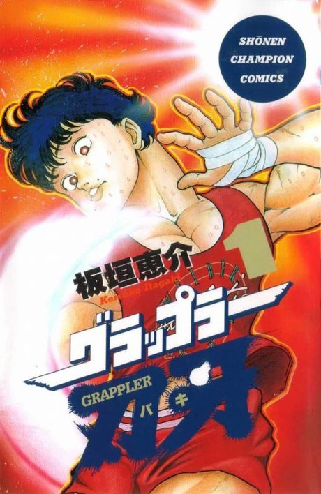

Anime
Anime
MangaBaki the Grappler
グラップラー刃牙 (TV)
The anime takes the story to Unclear.
7.2AniList
—Animeter
151 ep8 seasons
Is it worth pushing through?
Built from what visitors report across all 8 seasons (151 episodes).
Loading reports…Checking what other people said about this one.
Sign in above with your email to add your report.